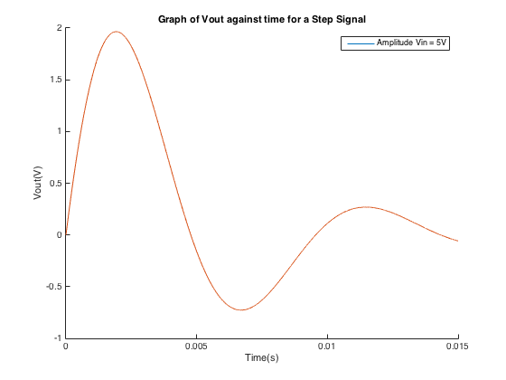
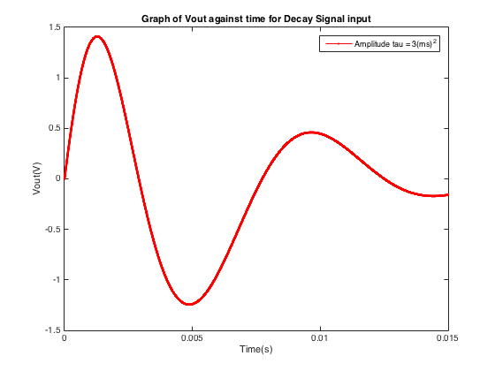

2) RLC circuit - Excercise 3
Introduction:
The following script tests the 4th order classic Runge-Kutta for an RLC circuit, which is a second order ODE. To simulate the system we use the rukasecond.m function, which calculates the next iteration of the numeric ODE solution. This function is called in the auxilary N_step_rk(), which repeats and saves the output for N number of steps
Mathematics involved:
The system is characterized by the following equations:
We first need to rewrite the first equation as two simultaneous first order equations to be solved by our Runge-Kutta algorithm. Since we are dealing with variances in charge (the derivative of q in terms of t) this can convinently be represented as the current i.
Finally we can also rewrite our voltage output in terms of the current, which leads to the more recognizable equation
function RLC_script()
Local function to produce Vout for the current set Vin and conditions for N steps.
Note: since we have set the whole script to be a function we can use local functions that hae access to the variables within the script. This means it will be evaluated with the value Vin, R, C etc have when the function is called
function [Tout,Vout] = N_step_rk() func=@(q, i, t) (1/L)*(v_in(t)-(R*i)-(q/C)); t=(0:h:h*(N-1)); for ind = 1:N-1 [q(ind+1), i(ind+1)]=rukasecond(q(ind), i(ind), t(ind), h, func); end Tout=t; Vout=R*i; end
Set given conditions
R=250; L=600e-3; C=3.5e-6; h=0.0000015; N=10000; q=zeros(N,1); i=zeros(N,1); q(1)=500e-9; i(1)=0;
Step signal input
v_in = @(t) 5*heaviside(t); [Tout,Vout] = N_step_rk(); figure(1); hold on; plot(Tout,Vout); title('Graph of Vout against time for a Step Signal'); xlabel('Time(s)'); ylabel('Vout(V)'); legend('Amplitude Vin = 5V')
DESCRIBE GRAPH
Decay signal input
v_in = @(t) 5*heaviside(t)*exp(-t^2/(3e-6)); [Tout,Vout] = N_step_rk(); figure(2) plot(Tout,Vout,'-r.'); hold on; title('Graph of Vout against time for Decay Signal input'); xlabel('Time(s)'); ylabel('Vout(V)'); legend('Amplitude tau = 3(ms)^2');
DESCRIBE GRAPH
Square signal inputs
f=109; v_in = @(t) 5*square((2*pi*f*t)); [Tout,Vout] = N_step_rk(); figure(3); plot(Tout,Vout,'-r.'); hold on; f=5; v_in = @(t) 5*square((2*pi*f*t)); [Tout,Vout] = N_step_rk(); plot(Tout,Vout,'-b.'); f=500; v_in = @(t) 5*square((2*pi*f*t)); [Tout,Vout] = N_step_rk(); plot(Tout,Vout,'-g.'); title('Graph of Vout against time for Square Signal inputs'); xlabel('Time(s)'); ylabel('Vout(V)'); legend('f=109hz','f=5hz', 'f=500hz');

DESCRIBE GRAPH
SINE SIGNAL
f=109; v_in = @(t) 5*sin((2*pi*f*t)); [Tout,Vout] = N_step_rk(); figure(4); plot(Tout,Vout,'-r.'); hold on; f=9; v_in = @(t) 5*sin((2*pi*f*t)); [Tout,Vout] = N_step_rk(); plot(Tout,Vout,'-b.'); f=500; v_in = @(t) 5*sin((2*pi*f*t)); [Tout,Vout] = N_step_rk(); plot(Tout,Vout,'-g.'); title('Graph of Vout against time of Sine Signal inputs'); xlabel('Time(s)'); ylabel('Vout(V)'); legend('f= 109Hz','f = 9Hz', 'f = 500hz');
DESCRIBE GRAPH
end